React
What’s React?
React is a JavaScript library for building user interfaces. It is maintained by Facebook and a community of individual developers and companies.
React can be used as a base in the development of single-page or mobile applications. Complex React applications usually require the use of additional libraries for state management, routing, and interaction with an API.
History
React was created by Jordan Walke, a software engineer at Facebook. He was influenced by XHP, an HTML component framework for PHP. It was open-sourced at JSConf US in May 2013.
On April 18, 2017, Facebook announced React Fiber, a new core algorithm of React framework library for building user interfaces.

Basic usage
The Greeter class is a React component that accepts a property greeting.
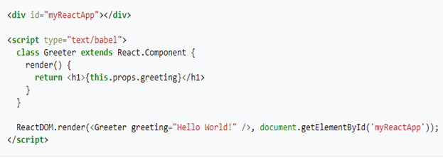When displayed in a web browser the result will be
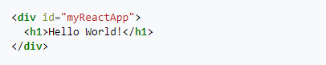Concepts of React
1. Elements and components
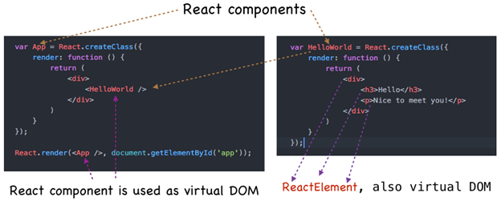2. Properties
Properties can be understood as component options. They are provided as component arguments and look the same as HTML attributes. In the render function, the Photo component has 2 properties: imageURL and caption.
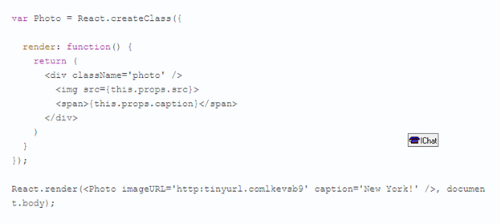3. JSX
JSX is a technique for creating React elements and components. For example, this is a React element written in JSX:
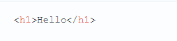The same element can be written in JavaScript:
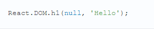Since JSX requires much less effort, it transforms into JavaScript before running in a browser.
4. Virtual DOM
Virtual DOM is a tree of React elements on JavaScript. React renders the Virtual DOM in the browser to make the interface visible. React monitors changes in Virtual DOM and automatically changes the DOM in the browser so that it matches the virtual one.
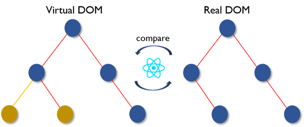React creates an in-memory data structure cache, computes the resulting differences, and then updates the browser's displayed DOM efficiently. This allows the programmer to write code as if the entire page is rendered on each change, while the React libraries only render subcomponents that actually change.
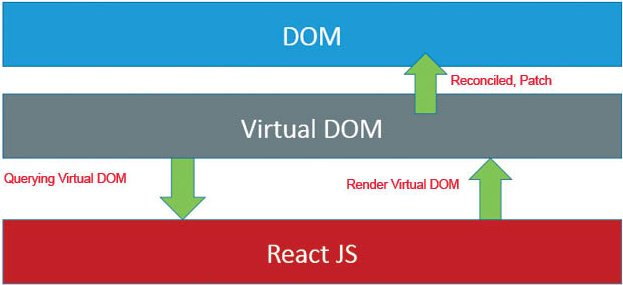React props
You can specify which primitive the property should be.
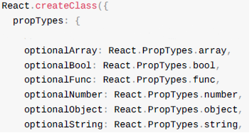You can indicate that a property can be one of ...
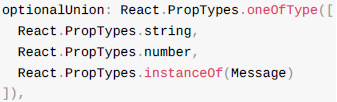You can specify the specific structure of the property object.
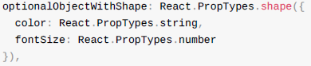You can indicate that the property is required
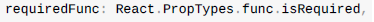State
A state is a special object inside a component. It stores data that may change over time. The component has a new function getInitialState. React calls it after initializing the component. It sets the initial state (which implies the name of the function).
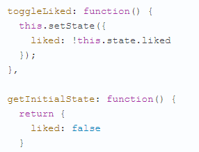The component also has a toggleLiked function. Using the setState function, it switches the liked state. The event is suspended by a button.
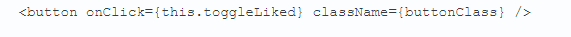Here is what happens after the component is drawn:
- After pressing the button, toggleLiked is called.
- Like state changes
- React redraws a component in Virtual DOM
- New Virtual DOM is compared with the previous one.
- React isolates changes and updates them in the browser DOM
In this case, React will change the class name of the button.
Refs
Refs are used to get a reference to a DOM (Document Object Model) node or component in React. Refs are created using React.createRef() and attached to React elements via the ref attribute.
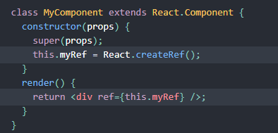There are a few good use cases for refs:
1. Managing focus, text selection, or media playback.
2. Triggering imperative animations.
3. Integrating with third-party DOM libraries.
Avoid using refs for anything that can be done declaratively.
Lifecycles methods
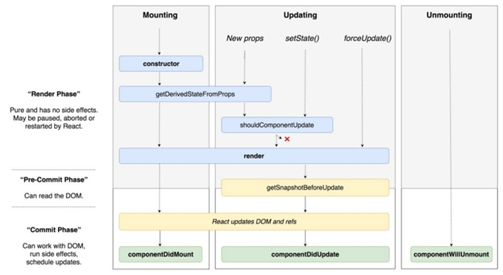ComponentWillMount - the component will be mounted. At the moment we have no opportunity to see DOM elements.
ComponentDidMount - the component was mounted. At the moment, we have the opportunity to use refs, and therefore this is the place where we would like to indicate the focus setting. Also, timeouts, ajax requests and interaction with other libraries should be handled here.
ComponentWillReceiveProps - the component receives new props. This method is not called at the time of the first render.
ShouldComponentUpdate - should the component be updated? In fact, usually the reactor itself perfectly understands. But sometimes manual control can significantly speed up the work in "bottlenecks". With this method you need to work very carefully.
ComponentWillUpdate - called right before render when new props and state are received. You cannot call setState in this method.
ComponentDidUpdate - called immediately after render. It is not called at the time of the first render of the component.
Benefits of using React
1. Performance when used correctly (speed).
2. You can always tell how your component will be drawn by looking at the source code.
3. Linking JavaScript and HTML in JSX makes components easy to understand.
4. You can render React on the server.
5. Thanks to the reuse of the code, it has become much easier to create mobile applications (extensibility).